Avaliação Intermediária de Cibersegurança · Insper · Mateus Porto Pereira de Paiva · matrícula 23620308
Repositório: github.com/Mateus-PortoPP/cyber_PI · Conceito pretendido: B
A extensão Rastro (Manifest V2, Firefox) detecta e apresenta, por aba: conexões a domínios de
terceira parte; cookies injetados (primeira/terceira parte, sessão/persistentes); uso de armazenamento
HTML5 (localStorage, sessionStorage, IndexedDB); canvas fingerprint; bounce tracking, cookie sync e
parâmetros de rastreio; e uma pontuação de privacidade de 0 a 100. As instruções de instalação via
about:debugging estão no README.md do repositório.
| Componente | Como detecta |
|---|---|
| Terceira parte | webRequest.onBeforeRequest: eTLD+1 da requisição ≠ eTLD+1 da página da aba (lib/psl.js, lista reduzida da Public Suffix List). |
| Cookies | Duas fontes: cabeçalhos Set-Cookie (onHeadersReceived, o que o servidor tentou gravar) e cookies.onChanged (o que o navegador gravou, inclusive via document.cookie). 3ª parte = eTLD+1 do cookie ≠ site da aba, ou cookie particionado (partitionKey). Sessão/persistente pelo campo session. |
| Armazenamento HTML5 | content.js em todos os frames lê chaves e tamanho (nunca valores) no carregamento e a cada 2 s; aberturas de IndexedDB são interceptadas no momento da chamada. |
| Canvas fingerprint | content.js intercepta, via exportFunction, toDataURL, toBlob, getImageData, convertToBlob (OffscreenCanvas) e readPixels (WebGL). Suspeita = leitura ≥16×16 de canvas com texto desenhado ou com WebGL; a marca acompanha cópias (drawImage, transferToImageBitmap). |
| Bounce tracking | Histórico da aba: salto por URL de redirect HTTP (mesmo requestId) ou página que saiu por JavaScript/meta refresh ou em <10 s sem interação do usuário, com eTLD+1 diferente do destino. |
| Cookie sync / parâmetros | Mesmo valor com cara de ID (≥8 caracteres, excluindo timestamps e o endereço da página) enviado a 2+ terceiros; valor de cookie na URL de terceiro; redirect entre terceiros com ID; lista de parâmetros de rastreio (utm_*, fbclid, gclid, msclkid…). |
doubleclick.net apareceu).cookies.getAll do Firefox.browser.cookies.getAll({partitionKey:{}}). Quando a página mostrou falhas, foi feita prova de controle com a extensão removida.Site: https://privacy-test-pages.site. Domínios de teste (README oficial): bad.third-party.site
(rastreador que o DDG bloqueia), broken.third-party.site (rastreador não bloqueado),
good.third-party.site (terceiro não rastreador). Os três têm o mesmo eTLD+1 (third-party.site),
o que explica parte das divergências. Onde a página não reporta um resultado, o “esperado” é o comportamento
descrito no título/código da página.
| Teste | Esperado (reportado pela página) | Resultado do plugin | Explicação da divergência |
|---|---|---|---|
| Tracker Reporting — 1 major tracker loaded via script | 1 rastreador: <script src="//doubleclick.net/tracker.js"> |
doubleclick.net, 1 requisição, tipo script. Nota 98. |
Sem divergência na detecção. Na aba Rede a requisição aparece bloqueada pela ETP do Firefox (lista Disconnect); o plugin a registra porque onBeforeRequest dispara antes do cancelamento. HAR mostra bloqueada, plugin mostra detectada. |
| Tracker Reporting — 1 major tracker with surrogate | 1 rastreador (doubleclick.net), que o DDG substitui por um script inofensivo (surrogate) |
doubleclick.net, 1 requisição, script. Nota 98. |
O plugin não injeta surrogate (só observa): registra a requisição original ao rastreador. |
| Tracker Reporting — 1 major tracker loaded via img | 1 rastreador via <img src="//facebook.com/tr?test=1"> |
facebook.com, 1 requisição, image; 1 cookie de 3ª parte persistente. Nota 94 (−2 terceiro, −3 cookie 3ª parte, −1 persistente). |
Sem divergência. O plugin mostra ainda que a resposta do pixel gravou cookie de terceira parte. |
| Tracker Reporting — Image loaded via document fragment | 1 rastreador (facebook.com) criado via document fragment |
facebook.com, 1 requisição, image. Nota 98. |
Sem divergência: a forma de inserir o elemento no DOM não muda a requisição de rede observada. |
| Tracker Reporting — document fragment [Delay 5s] | Mesmo rastreador, inserido 5 s após o carregamento | facebook.com, 1 requisição, image. Nota 98. |
Sem divergência: o listener de rede fica ativo durante toda a vida da página, não só no carregamento. |
| Tracker Reporting — 1 major tracker loaded via fetch | Página mostra “Tracker loaded” (fetch a facebook.com) |
facebook.com, 1 requisição, tipo xmlhttprequest. Nota 98. |
Sem divergência. O Firefox classifica fetch() como xmlhttprequest no webRequest. |
| Tracker Reporting — via fetch [Delay 5s] | “Tracker loaded”, 5 s após o carregamento | facebook.com, 1 requisição, xmlhttprequest. Nota 98. |
Sem divergência (idem delay acima). |
| Storage blocking | “Stored random number … using 23 storage mechanisms (1 failed)”; a falha é WebSQL (openDatabase is not defined) |
2 domínios de 3ª parte (third-party.site: good + broken; ad-company.site); 24 cookies (17 de 3ª parte, 7 de 1ª; 24 persistentes); armazenamento na página e nos iframes good, broken e ad-company (3 origens de 3ª parte, −10; 4 frames). Nota 56 (−4 terceiros, −20 cookies 3ª parte, −10 persistentes, −10 armazenamento). |
(1) WebSQL: o Firefox nunca implementou a API — limitação do navegador, não bloqueio. (2) IndexedDB vazio no iframe convert.ad-company.site: o iframe não carrega /helpers/idb-wrapper.js (HTTP 404, verificado) e a própria página mostra “DB is not defined”. (3) tptdata e tpsdata aparecem como 1ª parte: são gravados por scripts de broken./good.third-party.site rodando no contexto da página via document.cookie, então o cookie recebe o domínio da página (mesma técnica do _ga). (4) O DevTools da página não lista a origem dos iframes (são removidos logo após gravar); o plugin vê os quatro frames porque lê de dentro de cada um. (5) Em uma execução a página mostrou NetworkError nos testes de /set-cookie (status HTTP nulo, sem resposta do servidor) e o plugin contou 21 cookies — igual ao cookies.getAll (21), ou seja, variação da página, não do plugin. |
| Fingerprinting canvas verification | Tabela pass/fail da página: 4 fail — 2 de “resistance” (esperam ruído anti-fingerprint) e 2 de “correctness” (comparação com imagem de referência) |
Canvas fingerprint detectado: getImageData 122 leituras / 102 suspeitas; toDataURL 3 / 0. Terceiro: cloudflare.com (biblioteca do cdnjs). Nota 78. |
Os 4 fail aparecem idênticos com a extensão removida (prova de controle): não são causados pelo plugin. Os de “resistance” exigem ruído aleatório nos pixels (proteção do DDG), que o Firefox padrão não aplica e o plugin, só observador, também não. Os de “correctness” comparam com uma imagem de referência fixa; a renderização difere por máquina — exatamente o que torna o canvas fingerprint possível. Durante o desenvolvimento, a 1ª versão do hook quebrou todos os testes (“Permission denied to access property length”, causado por original.apply do mundo da página); corrigido com Reflect.apply. |
| Fingerprinting (Start the test) | “Collected 124 datapoints (14 failed)”; inclui 4 testes de canvas: canvas-2d-todataurl, canvas-2d-imagedata, canvas-2d-offscreen-todataurl, canvas-webgl |
toDataURL 4 leituras / 4 suspeitas; getImageData 1 / 1. Canvas fingerprint detectado (−20); nenhum terceiro, nenhum cookie. Nota 80. |
Os 4 testes de canvas foram detectados, inclusive o do OffscreenCanvas, que desenha num canvas e lê de outro (a 1ª versão não o pegava; a marca passou a acompanhar transferToImageBitmap/drawImage). A página nunca chama convertToBlob nem readPixels. Os demais ~120 datapoints (navigator, screen, parâmetros WebGL, cabeçalhos) não são monitorados — fora do escopo pedido (canvas). |
| Tracker Blocking | A página pede bad.third-party.site na lista de bloqueio; esperado: as 23 requisições bloqueadas. Resultado: 22 carregadas (verde), websocket falhou (vermelho) |
third-party.site detectado como terceira parte. Nota 98. |
O plugin é de detecção (conceito B), sem webRequestBlocking: não cancela requisições, por isso 22 carregaram. A falha do websocket não é causada pelo plugin, que não interrompe nenhuma requisição. |
| Storage partitioning | “Retrieved data from 21 storage mechanisms”: document.cookie, HTTP Cookie e Cookie Store API fail (o iframe de 3ª parte leu o mesmo cookie); localStorage, sessionStorage, IndexedDB, Cache API, ServiceWorker, BroadcastChannel, SharedWorker, Web Locks, caches de fetch/XHR/iframe/imagem/favicon/fonte/CSS e HSTS pass (particionados); WebSQL e Prefetch Cache unsupported. |
Nota 95. 1 domínio de 3ª parte (privacy-test-pages.site, 3 requisições de imagem); 3 cookies gravados, todos de 1ª parte (www.first-party.site) e persistentes (−3); 0 cookies de 3ª parte; 3 frames usando armazenamento (página + iframes). |
A página roda em www.first-party.site, embute good.third-party.site e verifica se os dados do iframe ficam separados por site. O Firefox particiona o armazenamento de terceiros (Total Cookie Protection). O plugin não testa particionamento, mas mostra o efeito: cookies de iframes de terceiros chegam com partitionKey.topLevelSite. Aqui a página reporta os três mecanismos de cookie como fail (o cookie de first-party.site foi lido de dentro do iframe) e todos os demais como pass: é o comportamento do Firefox, não do plugin, que só observa. O plugin não acusa cookies de 3ª parte porque os únicos cookies gravados pertencem ao próprio www.first-party.site; o iframe de third-party.site não gravou cookie próprio. A divergência é de escopo: a página mede isolamento de armazenamento entre sites, o que o plugin não mede. |
| Bounce tracking (4 links) | Cada link passa por bad.third-party.site/…/bounce.html, que grava um ID (cookie + localStorage) e redireciona por JavaScript (location.href), passando o ID na URL |
good.third-party.site: nenhum bounce. first-party.site, privacy-test-pages.site, publisher-company.site: bounce por bad.third-party.site, permanência 0,1–0,4 s. Com dados limpos: destino ?…&isNew=83 e popup “gravou 1 cookie(s)”. Critério 6: −15. |
(1) Destino good.third-party.site não é acusado: intermediário e destino têm o mesmo eTLD+1 (third-party.site), logo, pela metodologia, é o mesmo site. (2) O Firefox não marcou essa navegação com o qualificador client_redirect; quem detectou foi a regra de reserva (saída em <10 s sem interação). (3) webRequest.onBeforeRedirect não vê esse salto (a página responde HTTP 200 e redireciona por script); só o webNavigation vê. (4) O ID do DDG (1 a 101) é curto demais para contar como ID de cookie sync (mínimo 8 caracteres). |
| Query parameters (4 links) | Links de 1ª parte com utm_source; utm_source+utm_medium; fbclid+fb_source; e um link que não deve ser alterado (q, id). Um navegador protegido (DDG) removeria os parâmetros de rastreio |
Parâmetros detectados: utm_source · utm_source, utm_medium · fbclid, fb_source · nenhum. Parâmetros comuns (q, u, id) nunca acusados. |
O “Results” da página mostra que os parâmetros chegaram: o Firefox no nível Padrão não os removeu. O plugin não reescreve URLs (só observa); detecta e desconta na pontuação. |
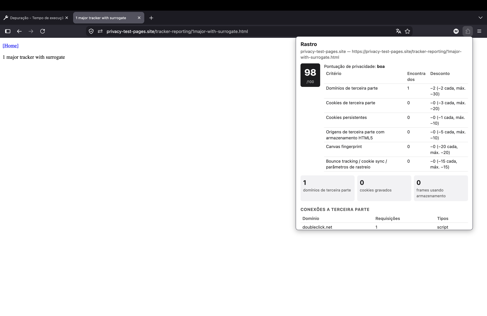
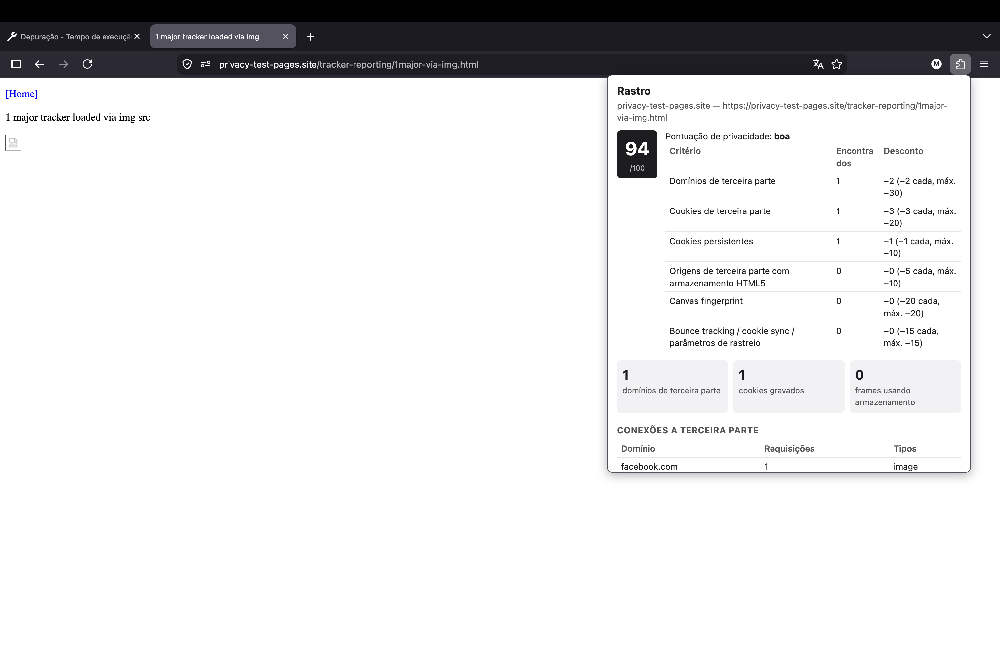
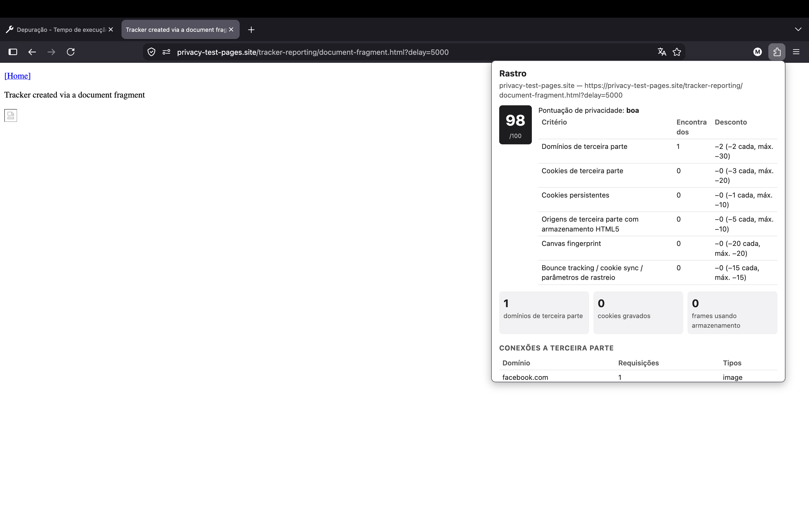
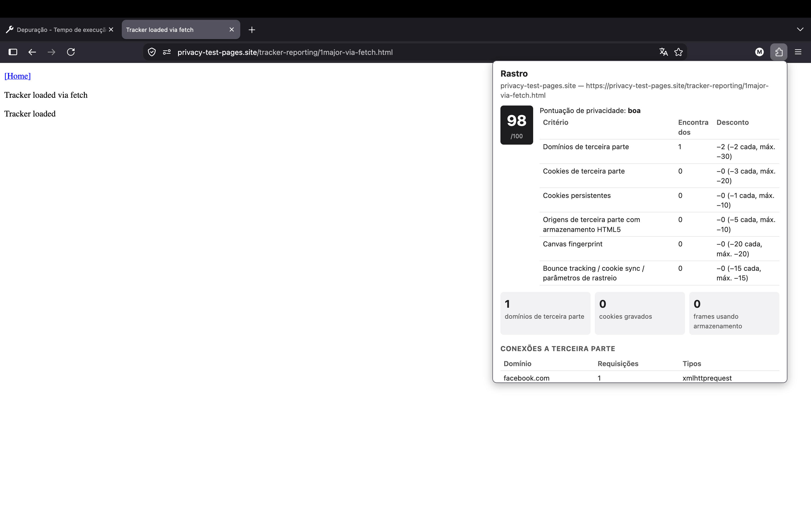
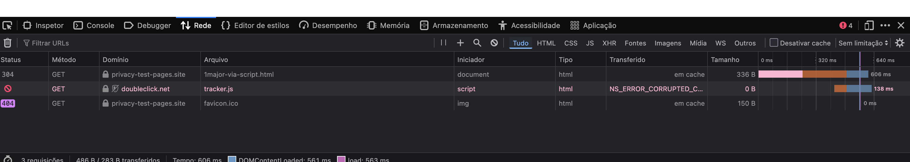
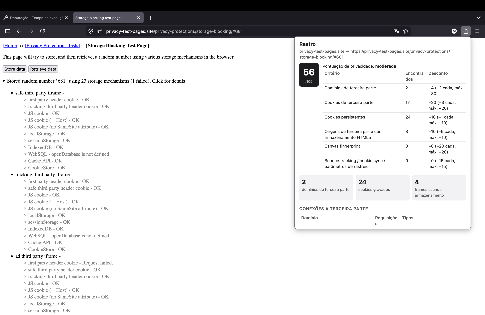
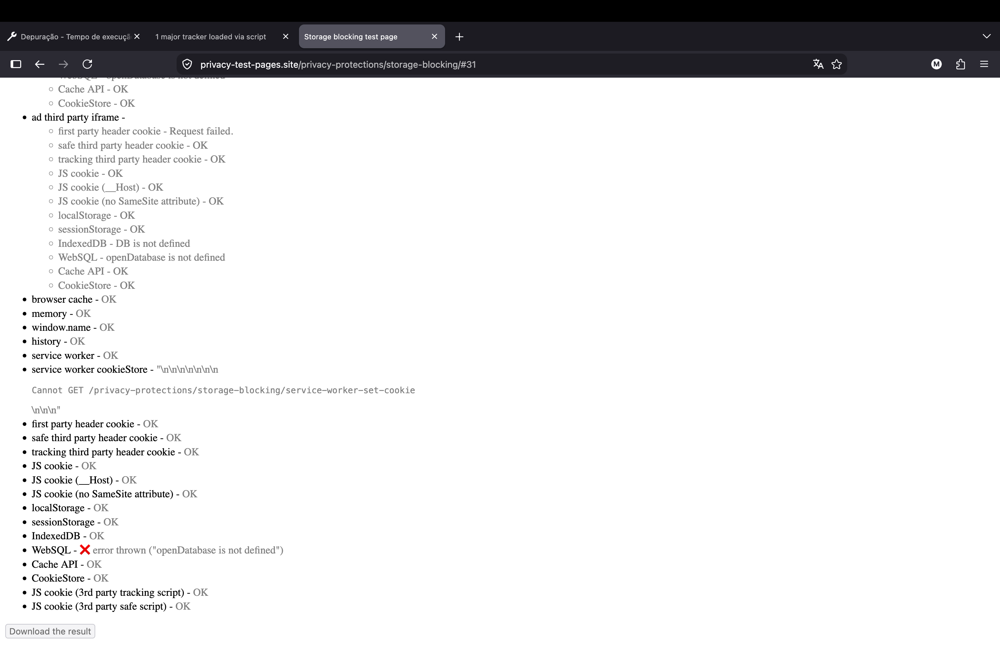
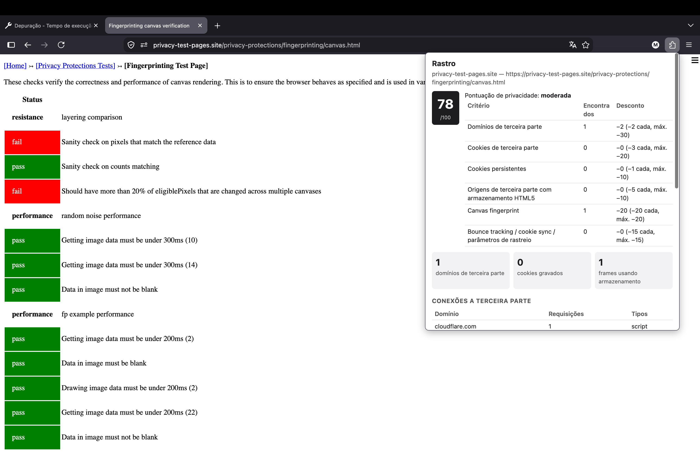
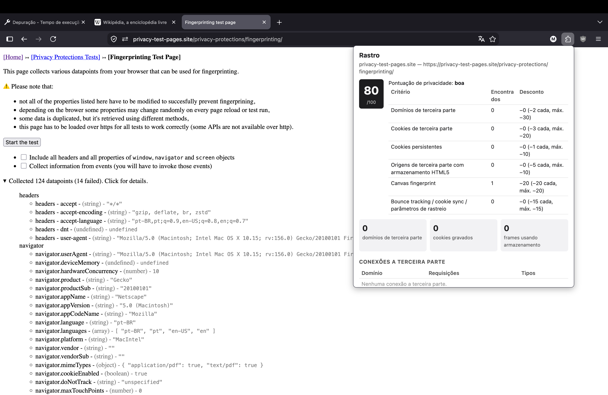
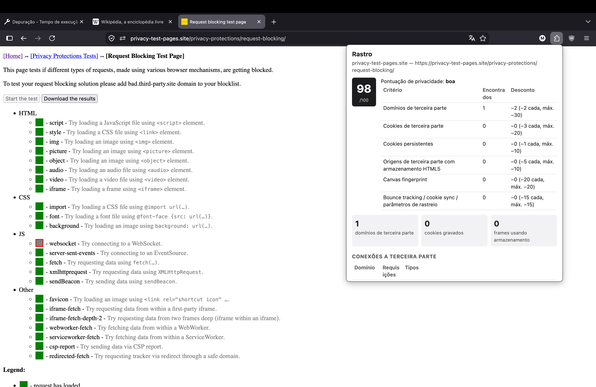
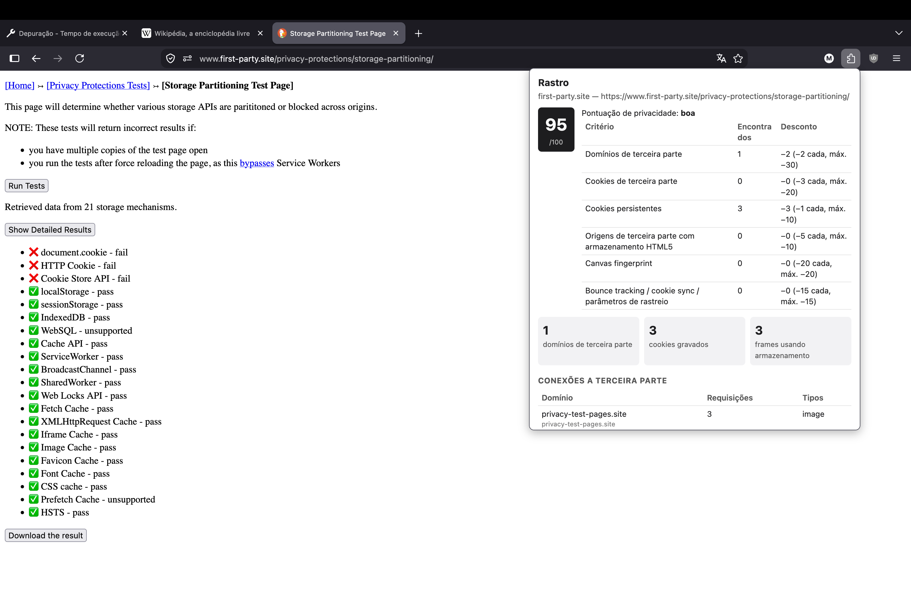
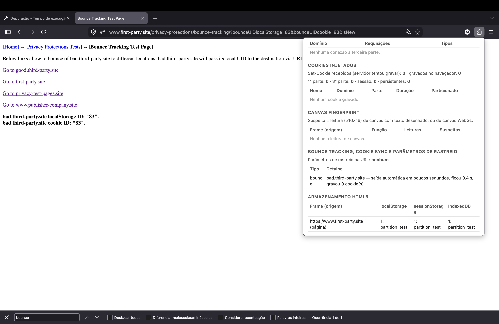
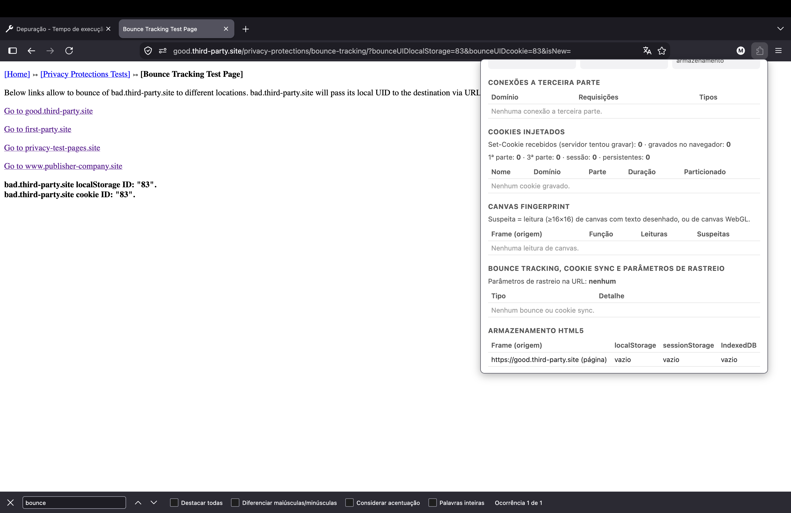
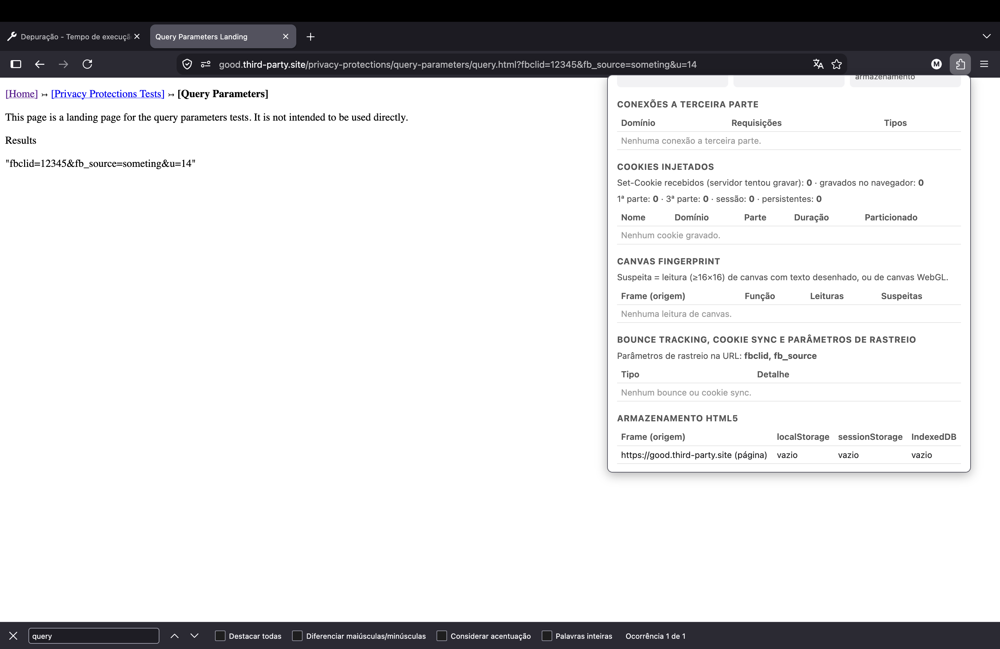
Os sites foram escolhidos livremente, conforme orientação do professor. Para cada site: dados do site limpos,
extensão carregada, visita à página inicial sem login, HAR exportado do DevTools (aba Rede → “Salvar tudo como HAR”),
print do popup, relatório do Blacklight (themarkup.org/blacklight) e bloqueios do uBlock Origin
(registro de requisições). Arquivos em evidencias/sites/<site>/.
Nenhum aviso de cookies/consentimento foi aceito ou recusado: mede-se o que o site faz antes do consentimento,
como faz o Blacklight (que não interage com a página). Sites: pt.wikipedia.org e duckduckgo.com
(esperados com pouco ou nenhum rastreamento, servem de contraste) e www.gov.br/pt-br.
| Fonte | O que encontrou |
|---|---|
| Plugin | Nota 68/100 (moderada). 1 domínio de terceira parte: wikimedia.org
(intake-analytics, thumb, meta, auth, upload; 12 requisições; beacon, imageset, image, script).
Cookies: 26 Set-Cookie recebidos, 12 gravados — 1 de 1ª parte, 11 de 3ª parte, 2 de sessão, 10 persistentes
(WMF-Uniq 364 dias, WMF-Last-Access 32 dias, NetworkProbeLimit 0 dias, GeoIP sessão), todos marcados como particionados.
0 origens de 3ª parte com armazenamento HTML5, 0 leituras de canvas, 0 bounce/cookie sync/parâmetros de rastreio. |
| Blacklight | 0 ad trackers · 4 third-party cookies (acima da média de 3) · sem canvas fingerprinting · sem session recording · sem key logging · sem Facebook/TikTok/X pixel · sem Google Analytics remarketing. |
| uBlock Origin | 1 bloqueio nesta página (3%), 2 de 2 domínios conectados. O único item de lista é o beacon de telemetria
intake-analytics.wikimedia.org/…/events?hasty=true (EasyPrivacy). |
| HAR | wikipedia.har: 38 requisições — 22 a pt.wikipedia.org, 15 a *.wikimedia.org
(thumb 5, intake-analytics 4, meta 2, auth 1, upload 1). Set-Cookie por host: thumb 15,
meta 4, auth 3, intake-analytics 3, upload 1, pt.wikipedia.org 5 (31 no total; o popup mostra 26 porque o HAR foi exportado após o print, com mais alguns beacons). |
Reconciliação (cada rastreador visto por uma ferramenta e não por outra, com referência ao HAR):
| Domínio / item | Plugin | Blacklight | uBlock | Explicação técnica |
|---|---|---|---|---|
| Cookies de 3ª parte | 11 | 4 | — | O plugin conta cada par (nome, host): NetworkProbeLimit aparece em thumb, meta e auth; WMF-Last-Access em meta e auth; WMF-Uniq em vários hosts.
Agrupando por nome, o HAR tem exatamente 4 cookies distintos vindos de *.wikimedia.org: GeoIP, NetworkProbeLimit, WMF-Last-Access, WMF-Uniq — o mesmo 4 do Blacklight.
As duas contagens medem a mesma coisa em granularidades diferentes. Observação: são cookies da própria Wikimedia Foundation; o plugin os trata como 3ª parte porque wikimedia.org e wikipedia.org são eTLD+1 diferentes (mesmo critério do navegador). |
wikimedia.org como terceiro | 1 domínio (−2) | 0 ad trackers | 1 bloqueio | O plugin conta todo domínio de 3ª parte, sem rotular; o Blacklight só conta domínios presentes na lista de rastreadores de anúncios (Disconnect) e wikimedia.org não está nela.
O uBlock bloqueia só a requisição de telemetria (POST intake-analytics.wikimedia.org/…/events, 4 no HAR) por regra da EasyPrivacy, e deixa passar imagens e scripts do mesmo domínio.
As três ferramentas concordam no fato (um único terceiro, de telemetria/CDN) e divergem só no rótulo. |
NetworkProbeLimit “persistente (0 dias)” | 3 persistentes | — | — | O cookie chega com Max-Age curto (expira em menos de um dia). O plugin classifica como persistente qualquer cookie que tenha data de expiração; a classificação está tecnicamente correta, mas infla o critério 3 em 3 pontos. Limitação anotada na seção 6. |
| Canvas, storage de 3ª parte, bounce/sync | 0 | não encontrado | — | Concordância total: o HAR não tem requisição a domínio de anúncios nem redirecionamento entre sites. |
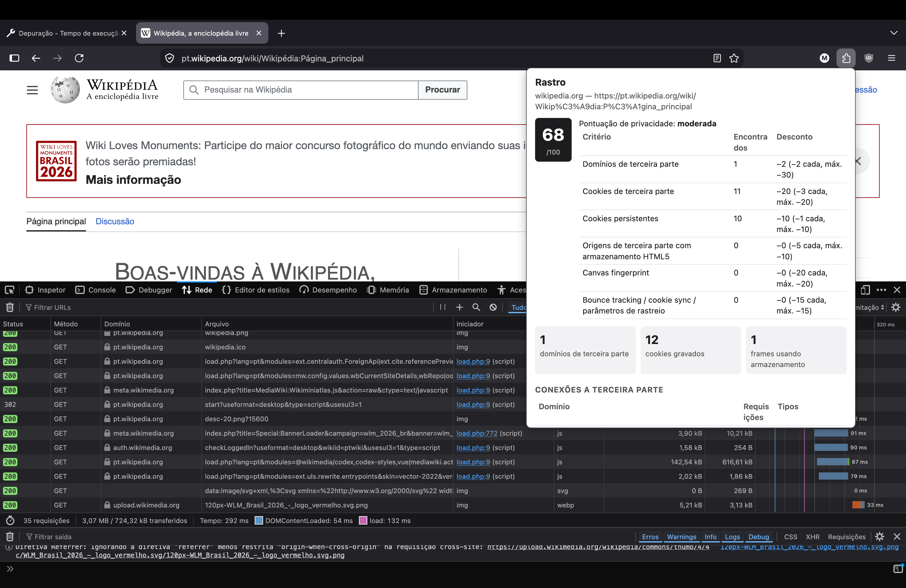
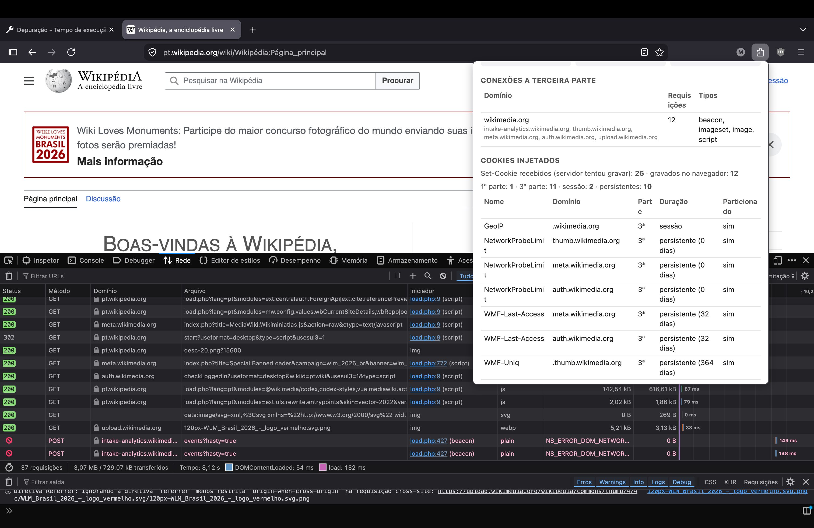
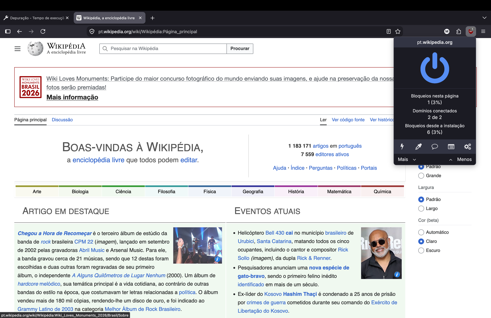
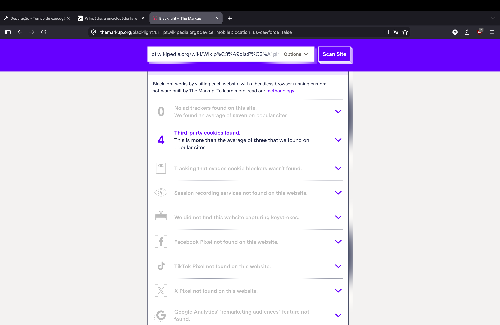
Aviso de cookies deixado sem resposta durante toda a medição. A nota do plugin caiu ao longo do carregamento
(80 logo após o load, 63 e por fim 55 depois de ~30 s), porque o Google Tag Manager, o Google Analytics e o mPulse
só disparam depois que a página fica pronta. Os prints e o HAR foram tirados no estado estabilizado (55).
| Fonte | O que encontrou |
|---|---|
| Plugin | Nota 55/100 (moderada). 11 domínios de 3ª parte: ebc.com.br 12 req. (iframe da Agência Gov), cloudflare.com 11 (cdnjs),
sistema.gov.br 10 (barra gov.br), go-mpulse.net 4, vlibras.gov.br 3, jsdelivr.net 3, googletagmanager.com 2, google.com 2 (analytics),
browser-update.org 1, doubleclick.net 1 (beacon), google.com.br 1 (image). Cookies: 89 Set-Cookie recebidos, 4 gravados —
2 de 1ª parte de sessão (TScceab889027, Encrypted-Local-Storage-Key) e 2 de 3ª parte persistentes de 400 dias (_ga, _ga_X0DQ0CT40G em .ebc.com.br, particionados).
0 storage HTML5 de 3ª parte, 0 canvas. Cookie sync detectado (2 ocorrências no popup): o mesmo identificador enviado a googletagmanager.com, google.com e outros domínios do Google (−15). |
| Blacklight | 1 ad tracker · 0 third-party cookies · sem canvas fingerprinting · sem session recording · sem key logging · sem Facebook/TikTok/X pixel ·
“Google Analytics remarketing audiences” não encontrado. Visita feita pelo Blacklight com device=mobile, location=us-ca. |
| uBlock Origin | 5 bloqueios nesta página (3%), 9 de 12 domínios conectados. Visível no print: s.go-mpulse.net/boomerang/… bloqueado (2×). |
| HAR | govbr.har: 140 requisições. Rastreadores: www.googletagmanager.com/gtag/js?id=G-X0DQ0CT40G (2×),
analytics.google.com/g/collect?…tid=G-X0DQ0CT40G (2×, HTTP 204), stats.g.doubleclick.net/g/collect?…cid=1372646340.1790629402 (204),
www.google.com.br/ads/ga-audiences?…cid=1372646340.1790629402 (200, GIF), s.go-mpulse.net/boomerang/… (2×) e c.go-mpulse.net/api/config.json?…d=agenciagov.ebc.com.br (4×), browser-update.org/update.min.js.
Os 89 Set-Cookie de www.gov.br são todos o mesmo cookie de sessão TScceab889027 (balanceador F5), reenviado em cada resposta. Não há Set-Cookie para _ga: ele é criado por JavaScript (gtag.js) dentro do iframe da EBC. |
Reconciliação:
| Domínio / item | Plugin | Blacklight | uBlock | Explicação técnica |
|---|---|---|---|---|
| Domínios de 3ª parte | 11 | 1 ad tracker | 12 conectados, 5 bloqueados | Três critérios diferentes. O plugin conta eTLD+1 distintos do site visitado, o que inclui CDNs (cloudflare.com, jsdelivr.net), o iframe da EBC e até sistema.gov.br e vlibras.gov.br:
como gov.br está na Public Suffix List, cada órgão é um “site” diferente para o navegador, e o plugin segue a mesma regra. O uBlock conta hostnames (por isso 12) e só bloqueia o que está nas listas
(mPulse, GTM/Analytics, DoubleClick). O Blacklight só rotula domínios da lista Disconnect de anúncios — o único que se encaixa é doubleclick.net/Google Ads. |
_ga, _ga_X0DQ0CT40G (.ebc.com.br) | 2 cookies de 3ª parte, 400 dias | 0 third-party cookies | — | O HAR mostra que os cookies não vêm de cabeçalho Set-Cookie: são gravados por gtag.js via document.cookie dentro do iframe agenciagov.ebc.com.br/embedgov_view. Para o iframe eles são de 1ª parte; para a aba (www.gov.br) são de 3ª parte e o Firefox os particiona.
O plugin classifica pela aba, como o enunciado pede. O Blacklight visitou em modo mobile, layout em que o embed da Agência Gov pode não ser carregado, e classifica o cookie pelo frame que o gravou — em ambos os casos, 0. |
| Cookie sync (critério 6) | detectado (−15) | — | — | O HAR confirma: o ID de cliente do GA, cid=1372646340.1790629402 (valor do cookie _ga), é enviado a stats.g.doubleclick.net e a www.google.com.br/ads/ga-audiences, ou seja, o mesmo identificador cruza três domínios. O Blacklight não tem essa categoria.
Ressalva: o popup destaca o parâmetro tid=G-X0DQ0CT40G, que é o ID da propriedade (igual para todos os visitantes); o sinal de sincronização de fato é o cid. A heurística acerta o caso, mas o detalhe exibido precisa de refinamento (seção 6). |
Google Analytics remarketing (ga-audiences) | requisição contada em google.com.br | “não encontrado” | bloqueado (lista) | O HAR tem GET www.google.com.br/ads/ga-audiences?… com status 200 — é exatamente o sinal que o Blacklight procura para “remarketing audiences”. A divergência vem da visita do Blacklight (mobile, EUA, sem o iframe da EBC que carrega o GA). O plugin não rotula a requisição como remarketing, só a conta como terceiro. |
go-mpulse.net (Akamai mPulse) | 4 req. (−2) | — | bloqueado | Monitoramento de desempenho (RUM) carregado pelo iframe da EBC (d=agenciagov.ebc.com.br na URL). Está na EasyPrivacy, por isso o uBlock bloqueia; não é rastreador de anúncios, por isso o Blacklight ignora. O plugin o trata como qualquer terceiro. |
Cookie RT rejeitado | não contado | — | — | O console registra “O cookie RT foi rejeitado por ter domínio inválido”: o mPulse tenta gravar um cookie com domínio que o Firefox recusa. Como o plugin conta apenas cookies efetivamente gravados (cookies.onChanged), a tentativa aparece só na contagem de Set-Cookie recebidos. |
| Canvas | 0 | não encontrado | — | Concordância. |
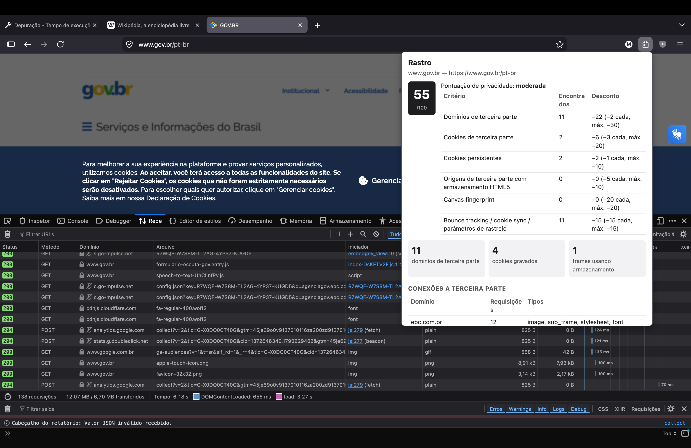
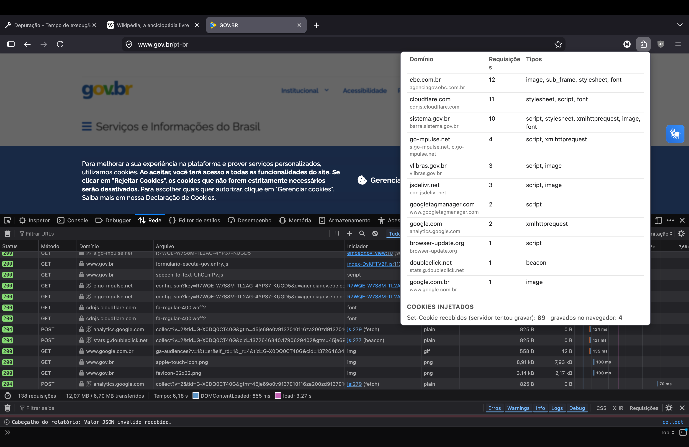
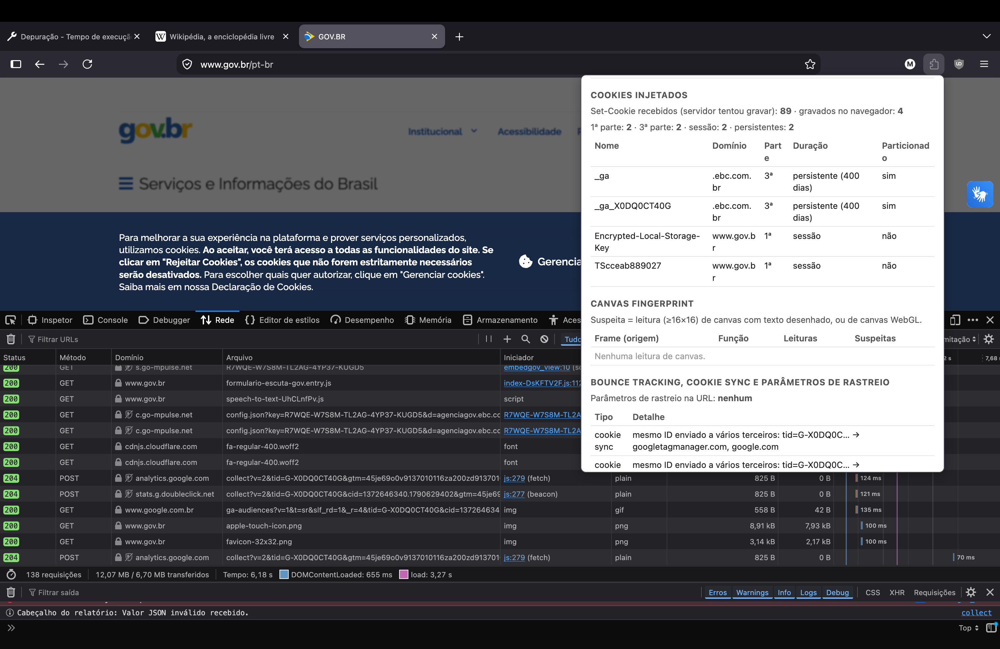
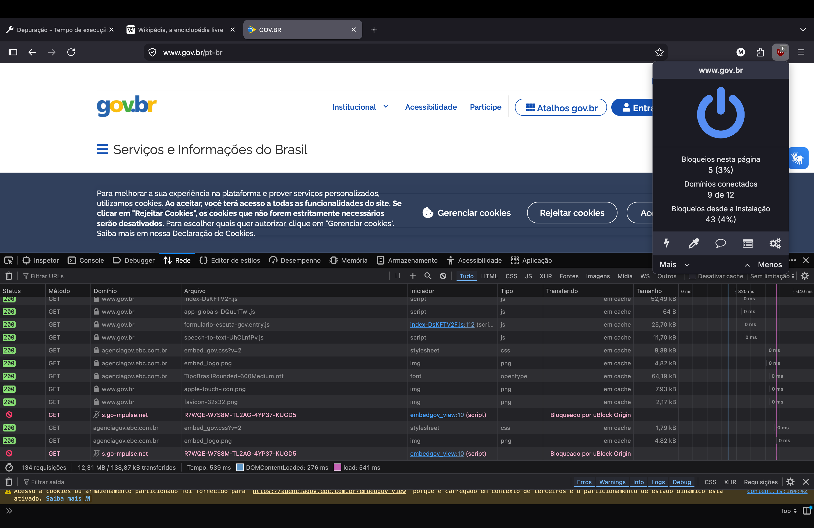
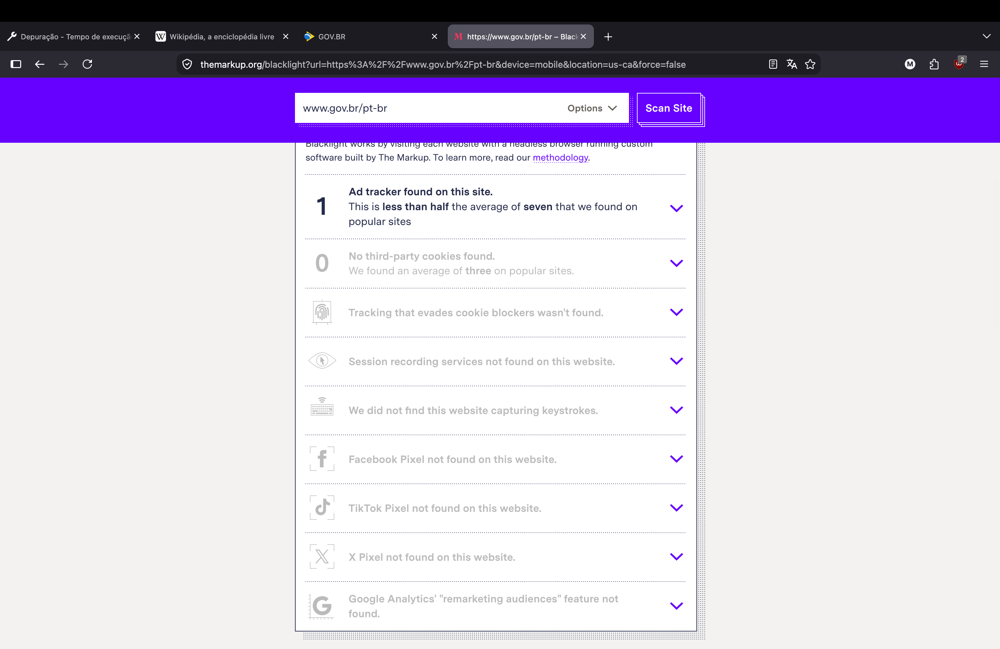
| Fonte | O que encontrou |
|---|---|
| Plugin | Nota 100/100 (boa). 0 domínios de terceira parte, 0 Set-Cookie recebidos, 0 cookies gravados, 0 origens de 3ª parte com armazenamento HTML5
(o próprio duckduckgo.com com localStorage, sessionStorage e IndexedDB vazios), 0 leituras de canvas, 0 bounce/cookie sync/parâmetros de rastreio. |
| Blacklight | 0 ad trackers · 0 third-party cookies · sem canvas fingerprinting · sem session recording · sem key logging · sem Facebook/TikTok/X pixel · sem Google Analytics remarketing. |
| uBlock Origin | 8 bloqueios nesta página (10%), 1 de 1 domínio conectado. |
| HAR | duckduckgo.har: 73 requisições — 63 a duckduckgo.com e 10 a improving.duckduckgo.com
(POST /t/page_home_impression, /t/static_webvitals, /t/static_fcp, /t/atb_home_impression, /t/wide_event_homepage_load-homepage, /e …).
Nenhum cabeçalho Set-Cookie em nenhuma resposta; nenhuma requisição envia cookie. Nenhum host fora de duckduckgo.com. |
Reconciliação:
| Domínio / item | Plugin | Blacklight | uBlock | Explicação técnica |
|---|---|---|---|---|
improving.duckduckgo.com (telemetria) | não contado (1ª parte) | não contado | 8 bloqueios | É a única divergência do site. As 10 requisições POST improving.duckduckgo.com/t/… do HAR são métricas de uso da página (impressão da home, Web Vitals, FCP, variante atb=v553-6),
sem cookie e enviadas ao mesmo eTLD+1 da página. O plugin, como o enunciado pede, mede terceira parte e cookies, então uma telemetria de 1ª parte sem identificador não pontua. O Blacklight também só olha terceiros.
O uBlock bloqueia por regra da EasyPrivacy (||improving.duckduckgo.com^), que cobre telemetria mesmo de 1ª parte. Mostra o limite da abordagem “terceira parte”: não captura coleta feita pelo próprio site. |
| Todos os demais critérios | 0 | não encontrado | — | Concordância total. Site de contraste: a metodologia dá 100 a um site que não usa terceiros nem cookies. |
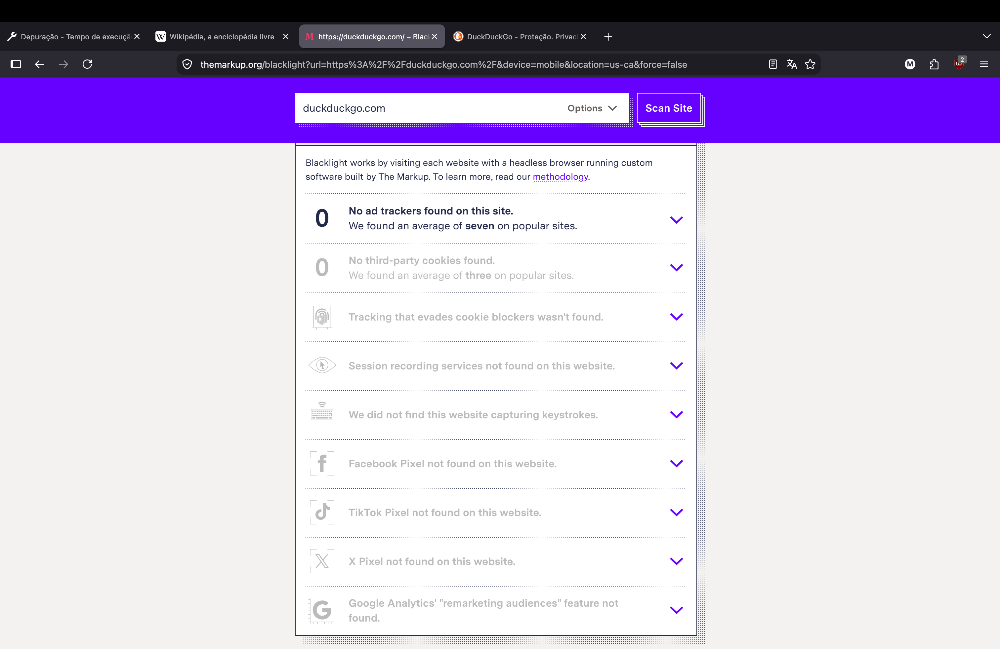
Causas recorrentes de divergência (para usar na reconciliação, sempre citando a requisição do HAR):
_ga gravado por gtag.js via document.cookie): o plugin classifica pelo frame em que o cookie foi gravado, em relação à aba; o Blacklight pode associá-los ao Google Analytics ou não os contar.A página começa com 100 pontos e perde pontos por ocorrência de cada critério, até um teto por critério
(um único tipo de problema não zera a nota). Nota mínima 0. Faixas: 80–100 boa · 50–79 moderada · abaixo de 50 ruim.
Cada critério corresponde a um item que o enunciado manda detectar. Princípio dos pesos: quanto mais difícil
para o usuário se defender, maior o peso — um cookie pode ser apagado; um fingerprint não depende de nada gravado.
Implementação em lib/score.js.
| Critério | Desconto | Teto | Justificativa |
|---|---|---|---|
| Domínio de terceira parte | −2 cada | −30 | Cada terceiro recebe IP, navegador e a página visitada (Referer). Peso baixo por item porque muitos terceiros são CDNs; teto alto porque dezenas de terceiros indicam ecossistema de rastreamento. |
| Cookie de terceira parte | −3 cada | −20 | Permite ao terceiro reconhecer o usuário em sites diferentes. |
| Cookie persistente | −1 cada | −10 | Sobrevive ao fechamento do navegador; peso baixo porque cookies persistentes também servem a preferências legítimas. |
| Origem de terceira parte com armazenamento HTML5 | −5 cada | −10 | Outro local para guardar identificador, fora dos cookies e das ferramentas usuais de limpeza. Conta origens distintas. |
| Canvas fingerprint | −20 | −20 | Identifica o navegador sem gravar nada; limpar cookies não resolve. |
| Bounce tracking / cookie sync / parâmetros de rastreio | −15 | −15 | Liga a identidade entre sites e contorna o particionamento de cookies do navegador. |
| Site | Nota do plugin | Critérios que descontaram | Blacklight (achados) | Onde concordam / divergem e por quê |
|---|---|---|---|---|
| pt.wikipedia.org | 68 (moderada) | 1 terceiro (−2) · 11 cookies de 3ª parte (−20, teto) · 10 persistentes (−10, teto) | 0 ad trackers · 4 third-party cookies · nada mais | Concordam em canvas, session recording e pixels (nada) e em haver cookies de 3ª parte acima da média. Divergem na severidade: o plugin pune 30 pontos por cookies que são da própria Wikimedia (eTLD+1 diferente) e com nomes repetidos entre hosts; o Blacklight conta 4 nomes e não os liga a anúncios. A nota 68 é dura para um site sem rastreador de anúncios — efeito do critério 2 contar por (nome, host). |
| www.gov.br/pt-br | 55 (moderada) | 11 terceiros (−22) · 2 cookies de 3ª parte (−6) · 2 persistentes (−2) · cookie sync (−15) | 1 ad tracker · 0 third-party cookies · remarketing não encontrado | Concordam que há rastreador de anúncios do Google (DoubleClick) antes do consentimento. Divergem nos cookies (_ga gravado via JS no iframe da EBC, que o Blacklight não viu) e no remarketing (ga-audiences presente no HAR, ausente na visita mobile do Blacklight). O critério 6 (cookie sync) captura o que o Blacklight não mede: o cid do GA compartilhado com DoubleClick e Google Ads. Nota menor que a da Wikipédia, coerente com mais rastreamento real. |
| duckduckgo.com | 100 (boa) | nenhum | 0 em todos os itens | Concordância total entre plugin e Blacklight. Só o uBlock aponta algo (8 requisições de telemetria de 1ª parte a improving.duckduckgo.com), que nenhum critério do plugin cobre porque não há terceiro nem cookie. Confirma que a régua distingue os três sites: 100 (sem rastreamento) > 68 (cookies de 3ª parte da própria organização) > 55 (Google Analytics, DoubleClick e cookie sync antes do consentimento). |
Equivalências usadas na comparação: third-party cookies (Blacklight) ↔ critério 2; canvas fingerprinting ↔ critério 5; ad trackers ≈ critério 1 (o Blacklight conta rastreadores conhecidos; o plugin, todo terceiro). O Blacklight não dá nota única, então a comparação é feita critério a critério.
bucket.s3.amazonaws.com vira amazonaws.com); também agrupa good. e bad.third-party.site.cookies.onChanged não informa a aba: atribuição por domínio; duas abas simultâneas com o mesmo terceiro podem confundir. Cookie regravado idêntico pode não gerar evento (observado, não confirmado em documentação).createImageBitmap não são cobertas; outros vetores de fingerprint (navigator, screen, fontes, áudio) não são monitorados.client_redirect nos testes.NetworkProbeLimit, Max-Age de horas) contam como persistentes; o critério 3 fica levemente inflado em sites da Wikimedia.cid do GA enviado a DoubleClick e Google Ads), mas o popup pode destacar um parâmetro constante (tid, ID da propriedade) em vez do identificador do usuário. Melhoria: ignorar parâmetros com valor igual entre visitantes.gov.br está na Public Suffix List) ou rastreador; a comparação com listas (Blacklight, uBlock) é feita no relatório, não no plugin.load; os prints foram tirados com a página estabilizada.textContent (nunca innerHTML), evitando XSS dentro da extensão.